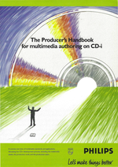
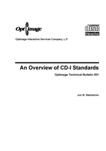
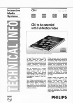
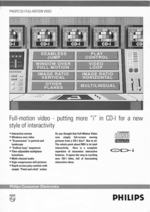
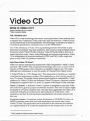
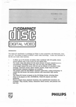

Authoring Book(lets)
On this page, you will find general books and booklets for CD-i authoring in Portable Document Format, you need Adobe Acrobat Reader to view or print them.
- The Producers Handbook for multimedia authoring on CD-i
Philips Interactive Media Centre, 1995
This booklet contains a concise overview of multimedia standards and applications,
discussing the CD-i development process, including the multimedia
assets, the production tools and the production team.
Download producers_handbook.pdf (PDF, 28 pages)
|
 |
- On Overview of CD-I Standards
OptImage Technical Bulletin 001, January 1993
This booklet contains an overview of technical CD-I standards including
CPU, Memory, Devices, Audio, Video, Media and Disc formats.
Download cdi_standards.pdf (PDF, 14 pages)
|
 |
- CD-I to be extended with Full-Motion Video
Philips Interactive Media Centre, May 1991
This booklet explains how Philips will be extending CD-I by adding Full Motion Video (FMV) capability to CD-I players with sections How To Upgrade To FMV, What FMV Offers, How FMV Works, The Complete Interactive System.
Download fmv_extension.pdf (PDF, 4 pages)
|
 |
- CD-I Full Motion Video - The Features
Philips Consumer Electronics B.V. IMS
This booklet explains interactive features that FMV adds to CD-I, like Seamless Jump, Play Control, Window over Full Motion, Video Loop, Image Ratio Vertical / Horizontal, Other Planes, Multilingual, The Stills Gallery and Picture and sound quality.
Note: All these features are demonstrated by the CD-i CD-i Full Motion Video Technical Aspects for which a disc image can be downloaded in the CD-i Disc Images Downloads section.
Download fmv_features.pdf (PDF, 4 pages)
|
 |
- What is Video CD
Philips Interactive Media, April 1994
This booklet explains Video-CD with TECHNOLOGY sections How Does Video CD Work, Comparing CD-I DV and Video CD, Why publish in the Video CD format and PRODUCTION sections Specification, Encoding, Graphics, Assembly and ending with a FOR MORE INFORMATION section.
Download vcd_synopsis.pdf (PDF, 5 pages)
|
 |
- Video-CD Introduction
Philips Consumer Electronics B.V. IMS, Sept 1994
This booklet contains an introduction to Video-CD with sections Standard, Market, Play back devices, Broadcasting standards, Comparison with other systems, How to make the disc, CD-I application program, Customizing, Verifier, Video-CD disc requirements, How to check, Printed matter, Technical section, License Information.
Download vcd_introduction.pdf (PDF, 11 pages)
|
 |
|

{kind=link}
{kind=link}
{kind=link}
{kind=link}
{kind=link}
{kind=link}